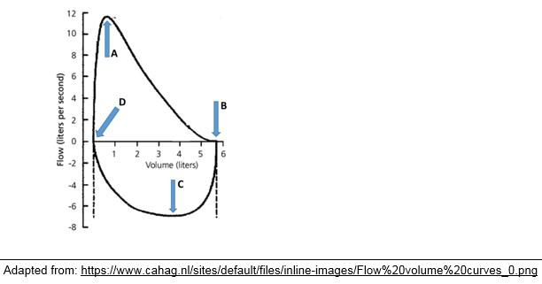
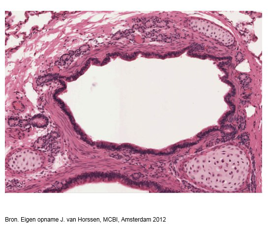
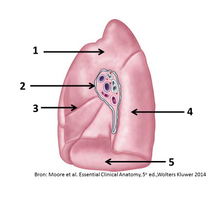

Vraag 1
Waar begint in de onderstaande Flow/Volume curve de proefpersoon met geforceerd uitblazen?

Vraag 2
In het respiratoire systeem moet voorkomen worden dat het longoppervlak en de thoracale wand van elkaar gescheiden worden.
Wat is hiervoor het meest belangrijk?
Vraag 3
Een proefpersoon met een normale (anatomische) dode ruimte van 150 ml, heeft bij inspanning een teugvolume (tidal volume) van 850 ml en een ademfrequentie van 20.
Wat is het respiratoir minuut volume van deze persoon?
Vraag 4
Wat verhoogt de alveolaire PO2?
Vraag 5
Welk longvolume wordt niet aangesproken als iemand zeer diep zucht?
Vraag 6
Wat is het effect van langdurige bedrust op het basaalmetabolisme?
Vraag 7
Waar zijn de zenuwen gelokaliseerd die de motorische neuronen van de inspiratoire spieren activeren?
Vraag 8
Kies de juiste alternatieven.
Als de CO2 concentratie stijgt in de weefsels, dan neemt de affiniteit van hemoglobine voor zuurstof door het effect.
Vraag 9
Welk van de volgende criteria is van toepassing bij diarree?
Vraag 10
Bij reizigersdiarree is meestal het volgende kenmerk van toepassing:
Vraag 11
Welk van de volgende condities geeft aanleiding tot secretoire diarree?
Vraag 12
Welke rol speelt gastrine bij het mengen en fijnmaken van voedsel in de maag?
Vraag 13
Welk van onderstaande is van toepassing op segmentatie contracties in de dunne darm?
Vraag 14
Welk van de volgende factoren is een remmer van de maagzuursecretie die karakteristiek is voor de intestinale fase van de regulatie?
Vraag 15
In welke vorm, en op welke manier worden de meeste vetten geabsorbeerd vanuit het darmlumen door de epitheelcellen van de dunne darm?
Vraag 16
Welke twee van onderstaande componenten van gal zijn belangrijk voor het emulgeren van vetten in de darm?
Meerdere antwoorden mogelijk.
Vraag 17
De bicarbonaation (HCO3-)-secretie door de pancreas wordt vooral gestimuleerd door het hormoon:
Vraag 18
Secretie van bicarbonaat (HCO3-) door cellen van de afvoerkanalen van de pancreas vindt plaats via:
Vraag 19
Welk van de volgende factoren stimuleert de insulinesecretie door de pancreas?
Vraag 20
Wanneer koolstofdioxide uit het capillaire bloed diffundeert naar de alveoli passeert het diverse structuren die bijdragen aan de bloed-gasbarrière. Plaats de onderstaande structuren in de juiste volgorde (positie 1 = eerst gepasseerd vanuit het capillaire bloed, positie 5 = laatst, richting alveoli).
Sleep een optie naar de bijbehorende rij, of tik eerst op een kaart en dan op een rij.
endotheelcellen
Sleep hier naartoe
endotheliale lamina basalis
Sleep hier naartoe
interstitieel bindweefsel
Sleep hier naartoe
epitheliale lamina basalis
Sleep hier naartoe
alveolair epitheel
Sleep hier naartoe
Vraag 21
Van welke structuur in de longen ziet u hier een dwarsdoorsnede?

Vraag 22
Welke twee producten worden door de wandcellen van de maag geproduceerd?
Meerdere antwoorden mogelijk.
Vraag 23
Kies de juiste alternatieven.
Bij de maagingang vindt men een abrupte overgang van cilindrisch epitheel van de oesophagus in cilindrisch epitheel van de maag.
Vraag 24
Welk celtype in de lever controleert het binnenstromende portale bloed op de aanwezigheid van bacteriën?
Vraag 25
In welke twee delen van het mediastinum bevindt zich de n. vagus?
Meerdere antwoorden mogelijk.
Vraag 26

Bekijk de afbeelding. Sleep het juiste nummer naar elke structuur (niet elke structuur heeft een nummer).
os hyoideum
cartilago thyroidea
ligamentum cricothyroideum
membrana thyrohyoidea
cartilago cricoidea
Vraag 27

Bekijk de afbeelding. Sleep het juiste nummer naar elke structuur.
Sleep een optie naar de bijbehorende rij, of tik eerst op een kaart en dan op een rij.
oropharynx
Sleep hier naartoe
laryngopharynx
Sleep hier naartoe
Vraag 28
Welke twee structuren ontstaan uit hetzelfde deel van de embryonale darm?
Meerdere antwoorden mogelijk.
Vraag 29

Bekijk de afbeelding. Sleep elke structuur naar het juiste nummer.
Sleep een optie naar de bijbehorende rij, of tik eerst op een kaart en dan op een rij.
lobus superior
Sleep hier naartoe
hilum pulmonis
Sleep hier naartoe
fissura horizontalis
Sleep hier naartoe
Vraag 30
Welke drie structuren ontstaan uit de achterdarm?
Meerdere antwoorden mogelijk.
Vraag 31
Welke drie morfologische kenmerken zijn typerend voor het jejunum?
Meerdere antwoorden mogelijk.
Vraag 32
Waarom kunnen lymfekliermetastasen van een maagcarcinoom zich supraclaviculair links bevinden?
Vraag 33

Bekijk de afbeelding. Sleep elke structuur naar het juiste nummer.
Sleep een optie naar de bijbehorende rij, of tik eerst op een kaart en dan op een rij.
ileum
Sleep hier naartoe
omentum majus
Sleep hier naartoe
colon transversum
Sleep hier naartoe
Vraag 34
Waar in het spijsverteringsstelsel vindt opname plaats van monosacchariden?
Vraag 35
Bij een marathon wordt de benodigde ATP in spiercellen in de laatste 10 km vooral geleverd door:
Vraag 36
Patiënten met galactosemie zijn niet in staat om lactose (melksuiker) in melkproducten af te breken tot monosacchariden.
Welk enzym is defect in patiënten met de niet-klassieke vorm van galactosemie?
Vraag 37
Welke van de onderstaande moleculen vormt de belangrijkste energiebron voor de hersenen na kortstondig (24 uur) vasten?
Vraag 38
Spieren hebben, net als de lever, hun eigen opslag van glycogeen. Echter, dit glycogeen is enkel bedoeld voor eigen gebruik door de spiercellen.
Welke van de onderstaande signalen is voor spiercellen een teken om de glycogeenvoorraad aan te breken?
Vraag 39
Waarom worden veel metabole enzymen zowel door hormonen als door intracellulaire metabolieten gereguleerd?
Vraag 40
Waarom ontwikkelen chronische alcohol gebruikers een vette lever (fatty liver)?
Vraag 41
Welke medicatie geeft vaak obstipatie?
Vraag 42
Een jonge vrouw van 27 jaar heeft sinds een half jaar last van obstipatie. Zij is zelf wat lijnzaad en extra fruit gaan eten en meer water gaan drinken. Het toiletbezoek kost haar desondanks veel tijd; ruim drie kwartier. Twee keer heeft ze er bloed bij gezien.
Wat is de meest waarschijnlijke diagnose bij deze patiënte?
Vraag 43
Bij een patiënte met sclerodermie is de motiliteit verstoord van de tractus digestivus.
Wat komt het meeste voor bij dergelijke patiënten?
Vraag 44
Een vrouw van 80 jaar bezoekt de huisarts. Ze is de laatste weken meer aan het hoesten en heeft meer dan anders last van dyspneu bij inspanning. Ze is een rookster; ze telt 50 packyears. De huisarts onderzoekt haar en doet de volgende bevindingen: normale huidskleur, pols 92/minuut (normaal <100/min), saturatie 96% (normaal >97%), bij auscultatie van de longen is het expirium verlengd en piepend en zijn er links en rechts basaal crepitaties te horen. Verder valt op dat ze oedeem heeft aan beide enkels.
Welke twee bevindingen bij lichamelijk onderzoek wijzen het meest op COPD?
Meerdere antwoorden mogelijk.
Vraag 45
Mevrouw de J. is 23 jaar. Ze bezoekt haar huisarts. Ze heeft al jaren in wisselende periodes last van buikpijn. Regelmatig moet ze vanwege de pijn sociale events aan haar voorbij laten gaan. De ontlasting is wisselend van consistentie. Soms hard en gevormd, soms brijig en dun. Het ontlastingspatroon is ook wisselend, soms meerdere keren per dag en soms een of twee dagen niet. Als ze buikpijn heeft dan is de buik vaak opgeblazen. Nadat ze naar het toilet is geweest voor ontlasting wordt de pijn meestal minder. Er is geen bloed in de ontlasting. Vorig jaar heeft de huisarts het hemoglobine en de bezinking geprikt en die waren toen normaal.
Welke diagnose is op dit moment het meest waarschijnlijk?
Vraag 46
Mevrouw B. is 33 jaar. Ze komt bij de huisarts omdat ze sinds twee dagen veel pijn heeft in haar rechterflank. De pijn straalt uit via haar rechteronderbuik naar de blaas. De pijn komt in aanvallen en is zeer hevig. Tijdens een pijnaanval kan ze door de hevigheid van de pijn niet stil blijven zitten (koliekpijn). Ze heeft tijdens de aanvallen een paar keer overgegeven. Ze heeft geen honger en de afgelopen dag niets gegeten (anorexie). Vanochtend was haar temperatuur 38.3 graden Celsius. Op weg naar de praktijk deed haar flank pijn bij hobbels in de weg (vervoerspijn).
Welke klacht wijst het meest op nierstenen?
Vraag 47
Mevrouw T. is 83 jaar. Ze is de laatste maanden toenemend kortademig bij inspanning. Ze heeft hypertensie, een te hoog cholesterol en ze heeft 3 jaar geleden een hartinfarct gehad. De tweedejaars geneeskundestudent die bij de huisarts stage loopt denkt dat haar klachten veroorzaakt kunnen worden door hartfalen.
Wat zijn de twee beste hypothese toetsende vragen voor hartfalen?
Meerdere antwoorden mogelijk.
Vraag 48
De heer A. is 25 jaar. Sinds een week is hij aan het hoesten. Hij vertelt de huisarts dat hij in het begin wit sputum hoestte, maar dat het sinds een paar dagen groen en troebel is. Sinds drie dagen heeft hij daarbij koorts gekregen. Hij voelt zich de laatste drie dagen zieker worden en hij voelt zich sinds vandaag ook kortademig. Bij onderzoek vindt de huisarts een temperatuur van 39.3 graden Celsius, een polsfrequentie van 92/minuut (normaal <100/minuut) en een ademfrequentie van 20/minuut (normaal <20/minuut). Over de longen hoort hij bij auscultatie aan de rugzijde beiderzijds basaal crepiteren. In de hals voelt hij geen abnormale lymfeklieren.
Welke gegeven is het sterkste bewijs voor een pneumonie?
Vraag 49
Casus
Een 63-jarige man komt op het spreekuur van de huisarts omdat hij nu ruim een week last heeft van een productieve hoest die maar niet overgaat. De huisarts gebruikt de vragen van ALTISO om de klacht verder uit te vragen. Zo vraagt ze onder andere of het hoesten toeneemt als meneer plat ligt. Hij geeft aan dat dit niet het geval is.
Een 63-jarige man komt op het spreekuur van de huisarts omdat hij nu ruim een week last heeft van een productieve hoest die maar niet overgaat. De huisarts gebruikt de vragen van ALTISO om de klacht verder uit te vragen. Zo vraagt ze onder andere of het hoesten toeneemt als meneer plat ligt. Hij geeft aan dat dit niet het geval is.
Welk onderdeel van de ALTISO vraagt de huisarts hiermee uit?
Vraag 50
Bij doorvragen vertelt patiënt dat hij geel-groenig slijm ophoest. Daarbij is hij ook kortademig en voelt hij zich beroerd. Hij rookt sinds zijn 16e een pakje sigaretten per dag en drinkt gemiddeld twee eenheden alcohol per dag. Bij lichamelijk onderzoek ziet de huisarts een ziek ogende man met een ademhalingsfrequentie van 22 per minuut en een pols van 86 slagen per minuut. Ze meet een temperatuur van 38,8 graden. Bij auscultatie van de longen hoort ze vesiculair ademgeruis met crepitaties in de rechter onderkwab.
Wat is nu de meest waarschijnlijke diagnose?
Vraag 51
De monosacharide glucose bevat een aldehyde groep met reducerend vermogen. Deze aldehydegroep kan worden aangetoond met behulp van de Fehling reactie. Cu2+ in het Fehling reagens vormt na reductie door de aldehyde groep in glucose een rood Cu+ precipitaat. Hierbij verdwijnt de blauwe kleur van het Fehling reagens. Zetmeel is een voedingsstof die bestaat uit polymeer glucose.
Verwacht u dat zetmeel een positieve reactie geeft met Fehling reagens?
Vraag 52
Welke van deze normale bewoners van ons maagdarmkanaal kan zowel urineweginfecties en wondinfecties, maar géén gastro-intestinale infecties veroorzaken bij tevoren gezonde personen?
Vraag 53
U ziet een patiënt met slikklachten en denkt aan een Zenkers divertikel.
Welke klacht past het minst bij de eerste klachtpresentatie van een Zenkers divertikel?